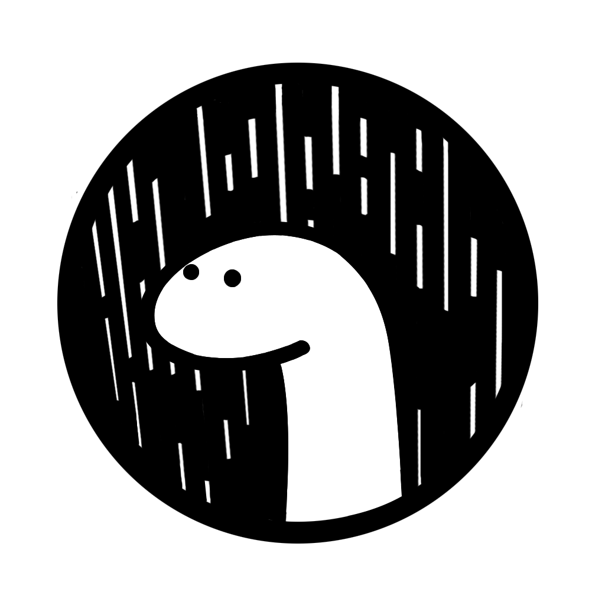

Web Interface
Concept
For the frontend of our web application, we use Astro, a modern static site generator that enables dynamic components and client-side rendering, making it an ideal choice for building performant and scalable web applications. We complement Astro with Svelte as our frontend framework, which emphasizes small bundle sizes and fast performance, allowing us to build reactive user interfaces and single-page applications. For our backend, we use Svelte.js, which is typically used as a frontend framework, but can also be used on the backend with Sapper or other similar frameworks. Svelte.js allows us to build reactive and scalable applications on both the frontend and backend. Additionally, we use Deno, a secure runtime for JavaScript and TypeScript that allows us to build server-side applications with ease. Deno provides built-in security features and a modern JavaScript API, making it an excellent choice for building secure and performant server-side applications.
JavaScript Frameworks and their Advantages
JavaScript frameworks like Astro and Svelte simplify the process of building web applications by providing a powerful set of tools and abstractions. Astro is a modern static site generator that allows for dynamic content, while Svelte is a reactive frontend framework for building high-performance applications. These frameworks offer improved productivity, maintainability, and performance, resulting in consistent, maintainable codebases that are easier to work with and debug. By using these frameworks, developers can build engaging web applications and provide a better user experience for their users.
Overview of the Project
Current Main components:
Astro
How we use Astro
On average a basic Astro project consists of these following files and their folders. Their importance and uses will be explained briefly:
folder public
This is one of the simpler folders, because it is only used to store file, media sources or fonts. These will then later be access through other files and only located in the public folder for ease of use.
folder src
This folder contains the source code for your application, including HTML, CSS, and JavaScript files. It is the main folder where you do most of your development work. This folder splits into 3 important sub-folders
sub-folder pages
This folder contains the top-level pages of your application. Each file in this folder corresponds to a route in your application, and the file name determines the URL of that route. For example, src/pages/index.`Astro <https://astro.build/>`_ corresponds to the root route of your application (/).
Here is an example of our index.astro file:
sub-folder layouts
This folder contains the layout templates for your application. Layout templates define the overall structure and style of your application, and they can be reused across multiple pages. Layout templates can also be nested, allowing for more complex layouts to be created.

Our current Layout.Astro looks something like this:
sub-folder components
This folder contains the reusable UI components of your application. Components are small, self-contained pieces of code that can be used throughout your application, making it easier to maintain and update your codebase. Components can be shared across pages and layouts and can also be customized for specific use cases. These Components can then later be used in the pages mentioned above to get their entire content listed on the pages. Pretty darn simple right?
As you can probably already see there is different kind of file extension with an even more interesting one the apicalls.http one. These Files have their original syntax so there is no need to try to change them into the Astro syntax:
file astro.config.mjs
The astro.config.mjs file is used to configure Astro, the modern static site generator, for your project. This file allows you to customize various aspects of your Astro project, such as configuring the build process, adding plugins, setting up server-side rendering, and defining environment variables. This file is a powerful tool for customizing and optimizing your Astro project. By using this file, you can fine-tune your application to meet your specific needs and ensure that it performs optimally.
file package.json
- The package.json file is a configuration file that is used by Astro (and other Node.js-based projects) to manage dependencies and scripts for your project. In a basic Astro project, the package.json file typically includes the following:
name: The name of your project.
version: The version of your project.
description: A brief description of your project.
keywords: An array of keywords that describe your project.
author: The name of the author(s) of your project.
license: The license under which your project is released.
dependencies: A list of dependencies required by your project, including Astro itself and any other third-party packages you might be using.
devDependencies: A list of development dependencies required by your project, such as testing frameworks, build tools, or other utilities.
In addition to these basic properties, the package.json file can also include custom scripts that are used to automate common tasks in your project, such as building the application, running tests, or deploying to production. Overall, the package.json file is an essential part of any Astro project, as it allows you to manage your dependencies and configure your project in a standardized and repeatable way. By using the package.json file, you can ensure that your project is easily reproducible, and that other developers can quickly get up and running with your codebase.
Svelte
How we use Svelte
Svelte is a modern JavaScript framework for building web applications. Unlike other frameworks that run in the browser, Svelte compiles your application into highly efficient vanilla JavaScript code that runs faster and takes up less space, resulting in better performance and a smaller file size.
Deno
How we use Deno
Deno can be used in combination with Astro to provide server-side functionality for your web application. Astro supports serverless functions, which are essentially small JavaScript scripts that run on the server and can perform tasks such as processing form data, accessing a database, or calling an external API. To use Deno with Astro and serverless functions, you can write your server-side code in Deno and define a serverless function that handles incoming requests and returns the response. You can then use this serverless function in your Astro components to fetch dynamic data and render content.
API
Using the API
To use an API, a software developer typically needs to know the URL (Uniform Resource Locator) of the API, the authentication method (if required), and the parameters that need to be passed to the API to retrieve or manipulate data. Once this information is obtained, the developer can use it to make requests to the API and receive responses.
How the API works
Our API consists of our Checkpoint-SMS which we access over the gaia_api with the appropriate version and command. In this case we use the “show-interfaces” command which shows us the interfaces of the appropriate device or devices.
After we send our Request we receive following text in full JSON-Format which we can access later and list in the config-subsite of the website.
Overview of the Website
Current Look of the WebPage
Home
Config
Status
Home
The purpose of this site
This is just a simple page that welcomes the user to the Re:Deploy Firewall manager and gives a quick Introduction into the firewall manager and what it does. The current look of it is this.
Config
The purpose of this site
The Config page is the part where the fun begins. In here the Devices which are called by the API are listed, with the option to either edit them or Delete/Shutdown them. Currently we only use Virtuel Device which we receive from our db to view them.
Edit
The purpose of this site
The Edit Page is for updating/changing the virtuell Devices which we receive from the DB. Listing works, but the functionality for updating the Devices isnt implemented into the db yet. The current Look of the page is this:

Status
The purpose of this site
The Status page is for showing the status of devices, basically the same as the Editing page but readonly: The current look of the page is the following:
Input Validation
The purpose of this site
The Input Validation Page is as the name states used for Input Validation so that the input that the User input is being checked and controlled. This Component should have been implemented into the Edit Page but since the Update Calls cannot be called it was not:
Token
The purpose of this site
The purpose of this page is being used by the android app which we created only, so that we can authenticate throught it: